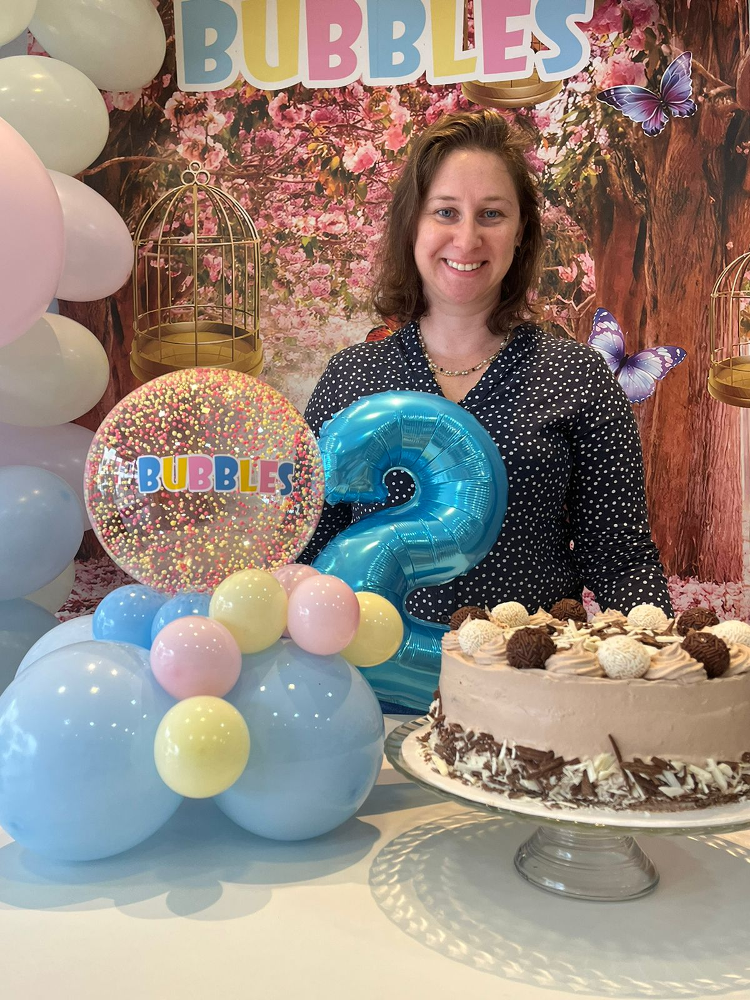

Sobre

Sobre
- Nome: Regiane Angelica Kovalski Froelich
- Data de Nascimento: 24/09/1984
- Abordagem: Acredita que a confeitaria é uma forma de arte. Cada criação é feita com amor e atenção
aos detalhes, garantindo que não só sejam visualmente impressionantes, mas também deliciosas.
Ela utiliza apenas os melhores ingredientes, preferindo produtos orgânicos e locais sempre que
possível. Sua abordagem é combinar técnicas tradicionais com inovações modernas, criando doces
que encantam tanto os olhos quanto o paladar.